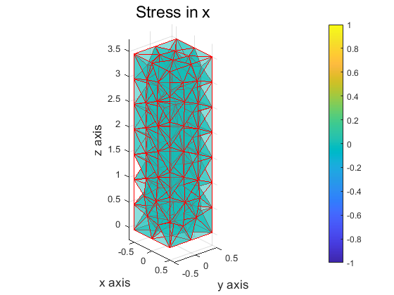
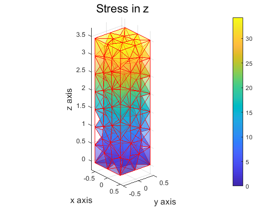
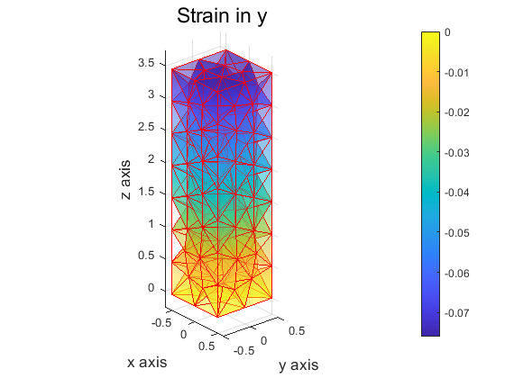
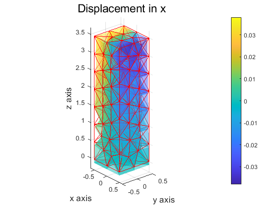
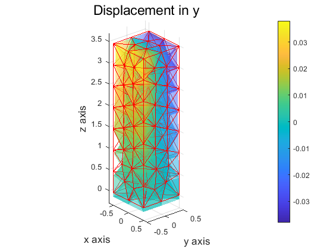
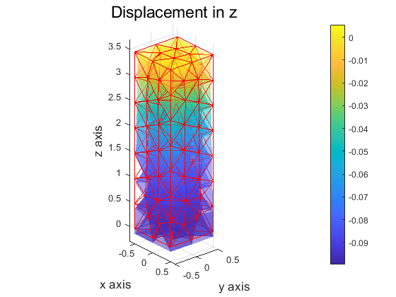

Analytical solution
Contributed by OuYang,Xiong
Contents
define parameters
material parameters young modulus
E = 600; % poisson's ratio nu = 1.33; %銆€density rho = 1; % load mesh model % x : coordinates (3* total nnde) % ix : node number matrix (nnde in cell* cell number) load('fix comsol.mat') % Geometric parameters % length in x,y,z Lz = max(x(:,3)) - min(x(:,3)); Ly = max(x(:,2)) - min(x(:,2)); Lx = max(x(:,1)) - min(x(:,1)); % physical force %gravity g = 9.8;
calculate analytical solution value
stress (x y z)
sig_z = rho* g* x(:,3); sig_x = zeros(size(sig_z)); sig_y = zeros(size(sig_z)); % strain (x y z) eps_xx = -(nu* rho* g* x(:,3))/E; eps_yy = -(nu* rho* g* x(:,3))/E; eps_zz = (rho* g* x(:,3))/E; % displacement (x y z) u_x = -(nu* rho* g).* x(:,1).* x(:,3) /E; u_y = -(nu* rho* g).* x(:,2).* x(:,3) /E; u_z = (rho* g/(2*E)).* (x(:,3).^2- Lz^2+ nu*(x(:,1).^2+x(:,2).^2)); %current configuration's coordinates xx = x+ [u_x,u_y,u_z];
convert vertex matrix to face matrix
for i = 1 : length(ix) [fx(((4*i-3):(4*i)),:),~] = VerToFace(x(ix(i,:),:),ix(i,:)); end
draw the figures
% sigma figure sty = {'Stress in x', 'Stress in y', 'Stress in z'}; sig=[sig_x,sig_y,sig_z]; for i =1:3 figure patch('vertices', x, 'faces', fx, ... 'facecolor', 'none', 'edgecolor', 'r'); hold on axis equal mypatch(x, ix, 'interp', 'none', sig(:,i), 0.5, 1, sty{i},'x axis','y axis','z axis'); view(50,25) colorbar end % epsilon figure eps = [eps_xx,eps_yy,eps_zz]; cel = {'Strain in x', 'Strain in y', 'Strain in z'}; for i =1:3 figure patch('vertices', x, 'faces', fx, ... 'facecolor', 'none', 'edgecolor', 'r'); hold on axis equal mypatch(x, ix, 'interp', 'none', eps(:,i), 0.5 , 1 , cel{i} ,'x axis','y axis','z axis'); view(50,25) colorbar end % replacement figure ctl ={'Displacement in x', 'Displacement in y', 'Displacement in z'}; u = [u_x,u_y,u_z]; for i =1:3 figure patch('vertices', x, 'faces', fx, ... 'facecolor', 'none', 'edgecolor', 'r'); hold on axis equal mypatch(xx, ix, 'interp', 'none', u(:,i), 0.5, 1,ctl{i},'x axis','y axis','z axis'); view(50,25) colorbar end     